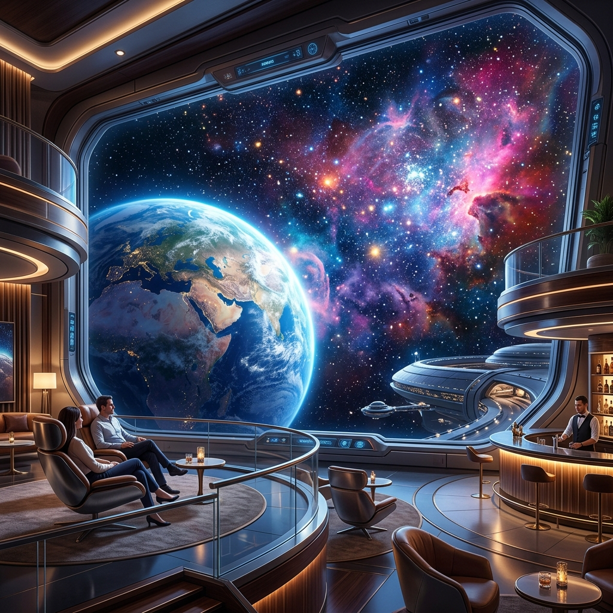
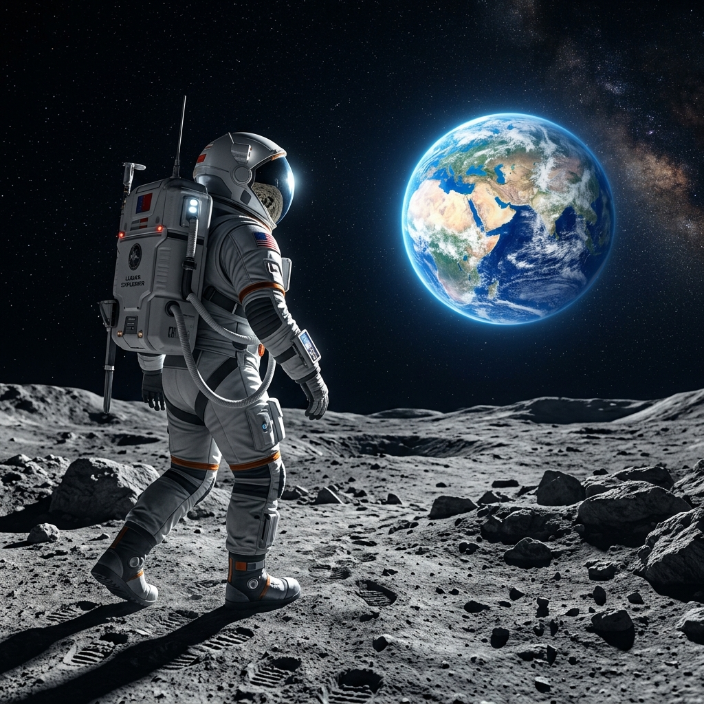
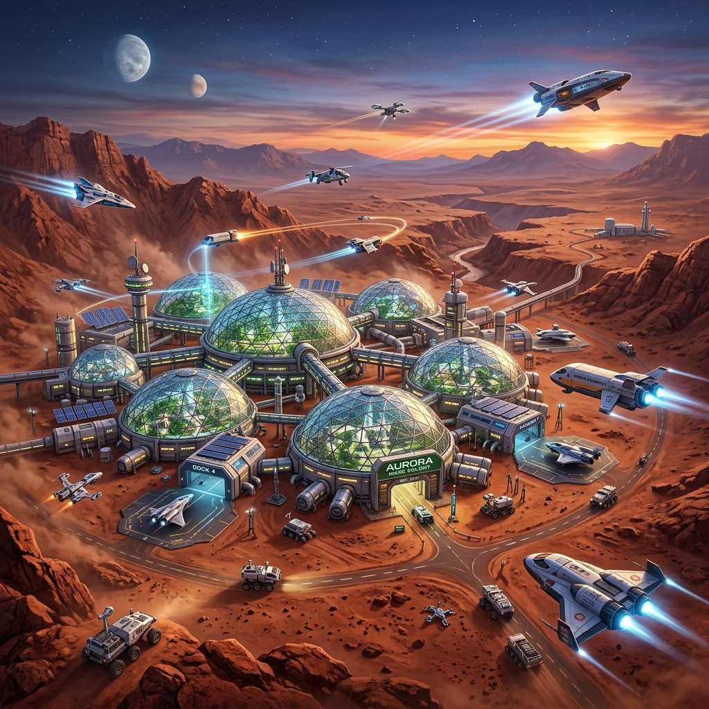

初心者向け
地球低軌道ホテル滞在 3日間
¥8,500,000 ~
高度400kmに浮かぶラグジュアリーホテルでの無重力スパ体験と、極上の宇宙料理を堪能できます。
あなたに最適な、一生に一度の宇宙体験プランをお選びください。

¥8,500,000 ~
高度400kmに浮かぶラグジュアリーホテルでの無重力スパ体験と、極上の宇宙料理を堪能できます。

¥24,000,000 ~
月面に降り立ち、地球を背景に散策。最新スペースバギーによるクレーター探索ツアーも含まれます。

¥98,000,000 ~
赤い惑星「火星」のドーム都市に滞在し、テラフォーミングの最前線を見学する究極のアドベンチャープラン。
実際に宇宙旅行へ旅立った先駆者たちの声をご紹介します。
「地球を宇宙から眺めた瞬間の感動は一生忘れません。宇宙食も想像以上に美味しく、船内は最高に快適でした！」
「月面でのウォーキングは、まるで別世界。重力が地球の6分の1という感覚は、体験した者しか分かりません。」
宇宙で撮影された息をのむような美しい光景の数々。クリックで拡大してご覧いただけます。
宇宙旅行はお客様の安全を第一に計画されておりますが、事前に以下の規約へのご理解と同意が必要となります。
上記のすべての項目を十分に理解し、自身の自由な意志によりリスクを受容した上で、本宇宙旅行に参加することを誓約いたします。